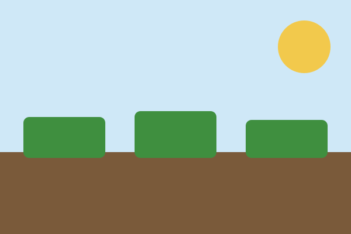

Sampler: a page with planted defects
Updated October 1
The garden in October

Volunteers are welcome every Saturday morning, rain or shine, and tools are provided by the institute.
Read the soil study that started the garden, or come to the fall mixer and see it for yourself.